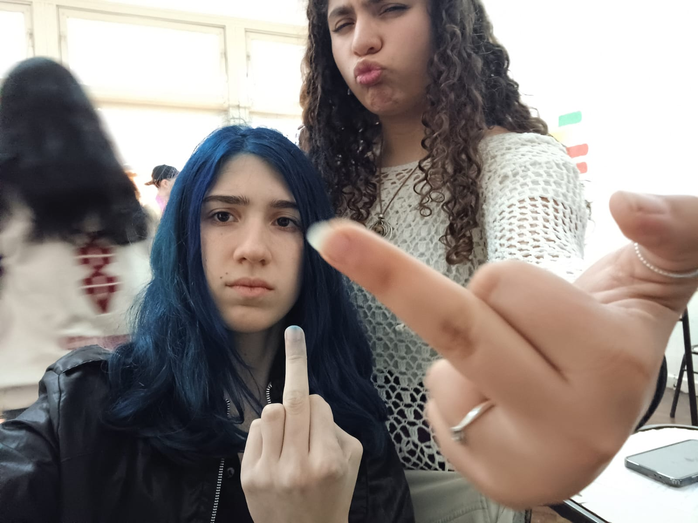
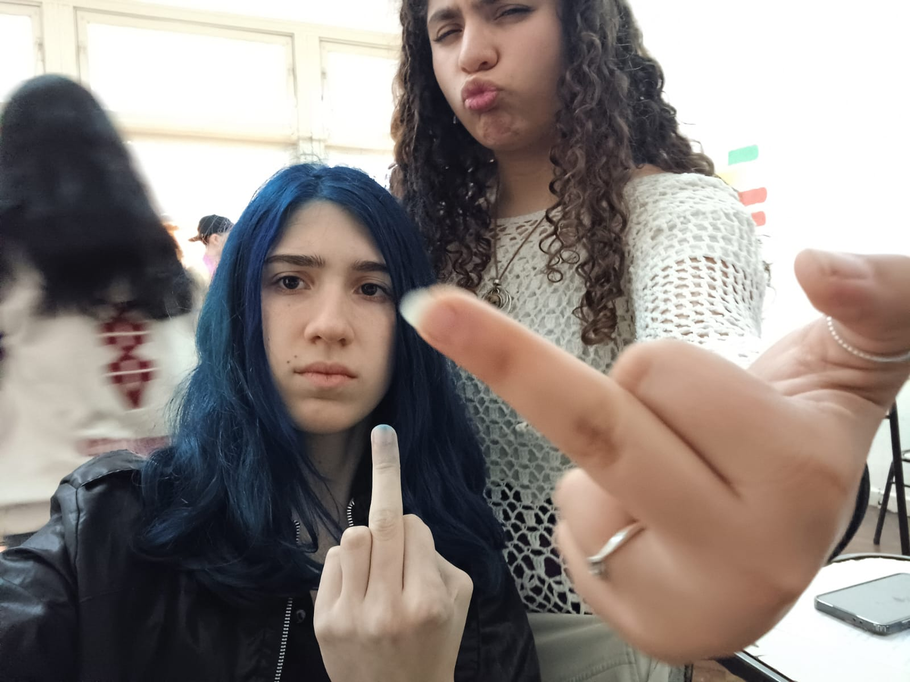

Entré a informática por decisión a último momento para probar algo nuevo. Toda mi vida me interesó más lo artístico o social pero esta vez quería probar otra área. Lo que más me llevo de esta orientación, es el diseño de páginas ya que me gusta mucho hacerlas.
Uno de mis miedos al entrar era el de la parte de sociabilizar pero al final todo resultó bien, así que me voy bastante satisfecha con el grupo que formamos. Igualmente habría estabo bueno habernos hecho más unidos mucho antes y disfrutar más tiempo como grupo.


 



Aprendí que me tengo que organizar mejor.
Que disfruten cada momento y lleven las materias al día.
Mis amigas.